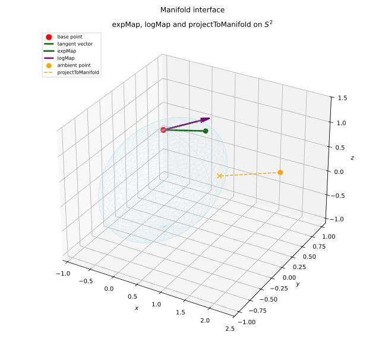

Manifold¶
(Source code, svg)


- class Manifold(*args)¶
Interface object for Riemannian manifolds.
Warning
This class is experimental and likely to be modified in future releases. To use it, import the
openturns.experimentalsubmodule.A Manifold object is built from a manifold implementation and forwards all the geometric operations to it:
>>> import openturns.experimental as otexp >>> manifold = otexp.Manifold(otexp.SphereManifold(3)) >>> print(manifold.getIntrinsicDimension()) 2
Methods
expMap(basePoint, tangentVector)Exponential map at a base point.
Accessor to the ambient dimension.
Accessor to the object's name.
Accessor to the tolerance.
getExpMapVolumeDensity(coordinates)Volume density of the pushed-forward Lebesgue measure.
getGeodesicDistance(point1, point2)Geodesic distance between two manifold points.
getId()Accessor to the object's id.
Accessor to the underlying implementation.
Accessor to the intrinsic dimension.
getName()Accessor to the object's name.
getTangentBasis(basePoint)Orthonormal basis of the tangent space at a base point.
Total Riemannian volume of the manifold.
isOnManifold(point)Check manifold membership up to the tolerance.
logMap(basePoint, point)Logarithmic map at a base point.
projectToManifold(point)Closest-point projection onto the manifold.
projectToTangentSpace(basePoint, vector)Orthogonal projection onto the tangent space at a base point.
setEpsilon(epsilon)Accessor to the tolerance.
setName(name)Accessor to the object's name.
See also
Notes
The following
ResourceMapkey is used:Manifold-Epsilon(Scalar, default:1e-10): tolerance used byisOnManifold()and the projections.
- __init__(*args)¶
- expMap(basePoint, tangentVector)¶
Exponential map at a base point.
- Parameters:
- basePointsequence of float
Base point on the manifold.
- tangentVectorsequence of float
Tangent vector at the base point.
- Returns:
- point
Point Image of the tangent vector on the manifold.
- point
- getAmbientDimension()¶
Accessor to the ambient dimension.
- Returns:
- ambientDimensionint
Dimension of the ambient Euclidean space.
- getClassName()¶
Accessor to the object’s name.
- Returns:
- class_namestr
The object class name (object.__class__.__name__).
- getEpsilon()¶
Accessor to the tolerance.
- Returns:
- epsilonfloat
Tolerance used by
isOnManifold()and the projections.
- getExpMapVolumeDensity(coordinates)¶
Volume density of the pushed-forward Lebesgue measure.
- Parameters:
- coordinatessequence of float
Intrinsic coordinates in the tangent basis.
- Returns:
- densityfloat,
![> 0]()
Volume density at the given coordinates.
- densityfloat,
- getGeodesicDistance(point1, point2)¶
Geodesic distance between two manifold points.
- Parameters:
- point1sequence of float
First point of the manifold.
- point2sequence of float
Second point of the manifold.
- Returns:
- distancefloat
Geodesic distance between the two points.
- getId()¶
Accessor to the object’s id.
- Returns:
- idint
Internal unique identifier.
- getImplementation()¶
Accessor to the underlying implementation.
- Returns:
- implImplementation
A copy of the underlying implementation object.
- getIntrinsicDimension()¶
Accessor to the intrinsic dimension.
- Returns:
- intrinsicDimensionint
Dimension of the manifold as a Riemannian manifold.
- getName()¶
Accessor to the object’s name.
- Returns:
- namestr
The name of the object.
- getTangentBasis(basePoint)¶
Orthonormal basis of the tangent space at a base point.
- Parameters:
- basePointsequence of float
Base point on the manifold.
- Returns:
- basis
Sample Orthonormal ambient vectors spanning the tangent space.
- basis
- getVolume()¶
Total Riemannian volume of the manifold.
- Returns:
- volumefloat
Total volume of the manifold for its Riemannian metric.
- isOnManifold(point)¶
Check manifold membership up to the tolerance.
- Parameters:
- pointsequence of float
Ambient vector.
- Returns:
- isOnManifoldbool
Whether the ambient vector lies on the manifold.
- logMap(basePoint, point)¶
Logarithmic map at a base point.
- Parameters:
- basePointsequence of float
Base point on the manifold.
- pointsequence of float
Point of the manifold.
- Returns:
- tangentVector
Point Preimage of the point in the tangent space at the base point.
- tangentVector
- projectToManifold(point)¶
Closest-point projection onto the manifold.
- Parameters:
- pointsequence of float
Ambient vector.
- Returns:
- projectedPoint
Point Projection of the ambient vector onto the manifold.
- projectedPoint
- projectToTangentSpace(basePoint, vector)¶
Orthogonal projection onto the tangent space at a base point.
- Parameters:
- basePointsequence of float
Base point on the manifold.
- vectorsequence of float
Ambient vector.
- Returns:
- tangentVector
Point Projection of the ambient vector onto the tangent space.
- tangentVector
- setEpsilon(epsilon)¶
Accessor to the tolerance.
- Parameters:
- epsilonfloat,
Tolerance used by
isOnManifold()and the projections.
- epsilonfloat,
- setName(name)¶
Accessor to the object’s name.
- Parameters:
- namestr
The name of the object.